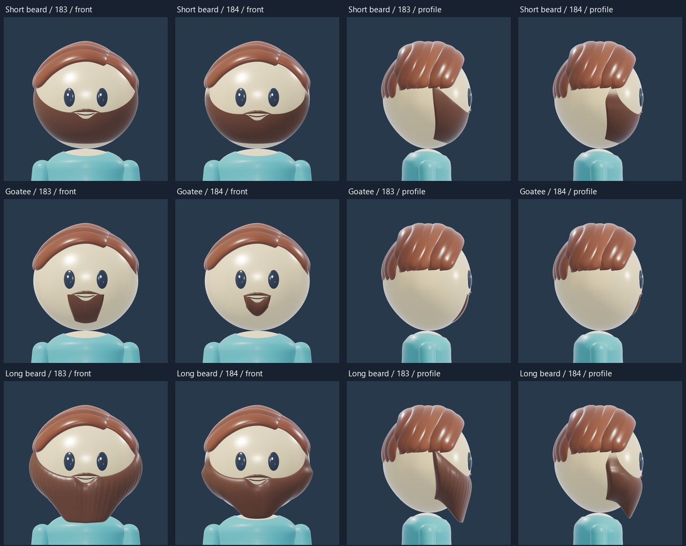
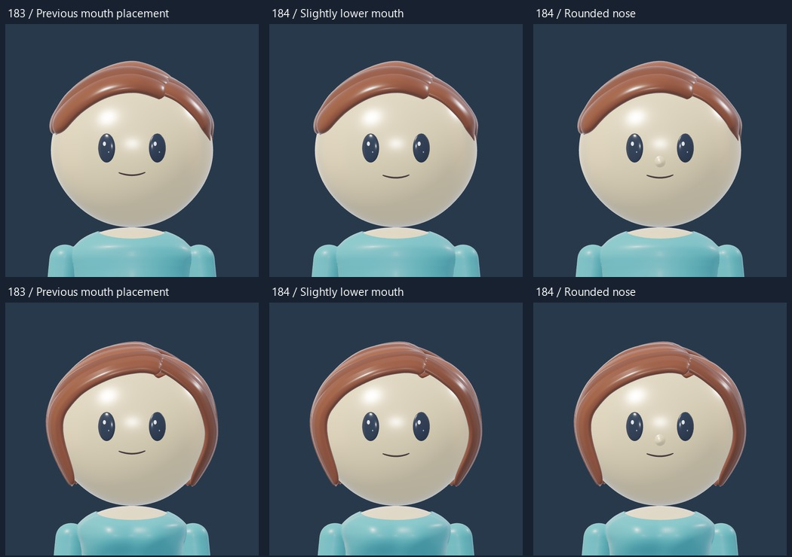
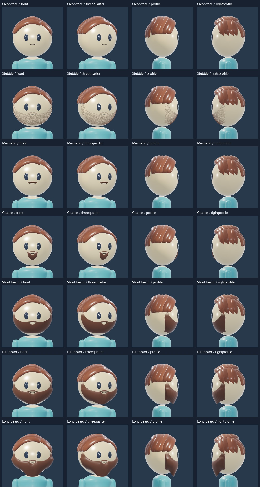
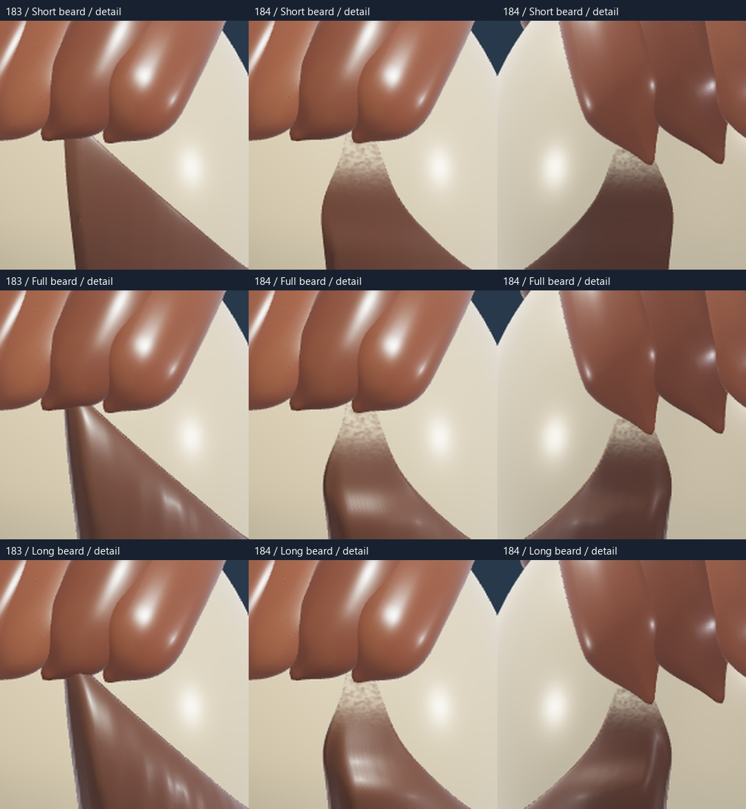
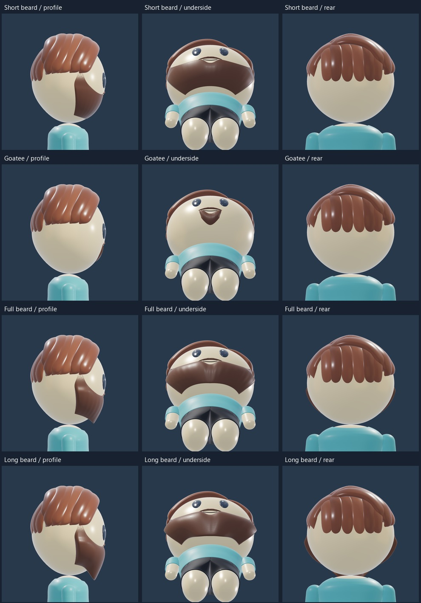
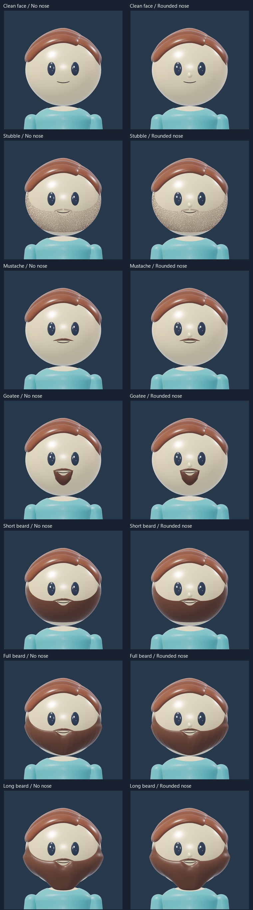
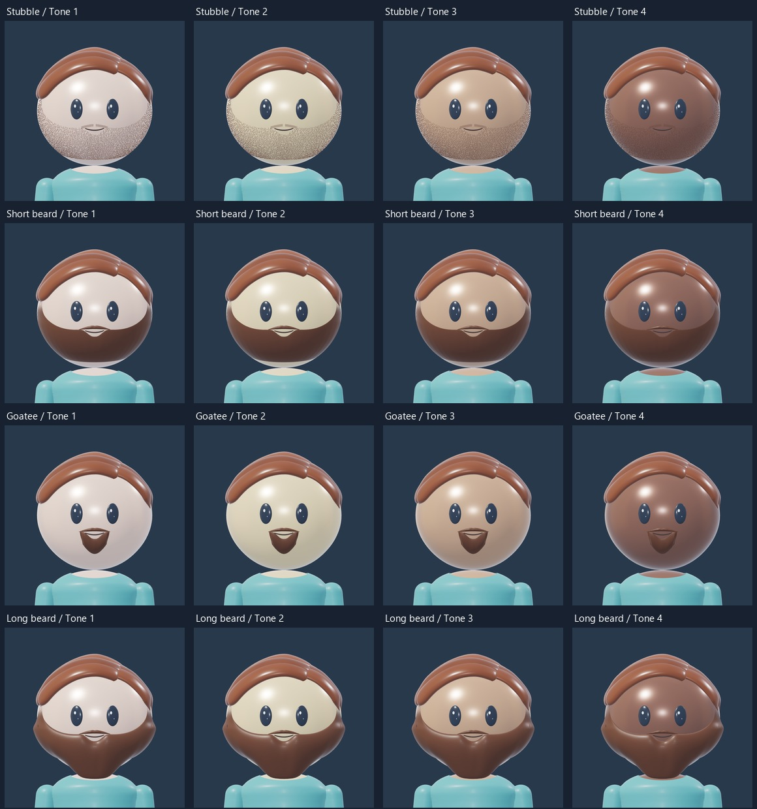
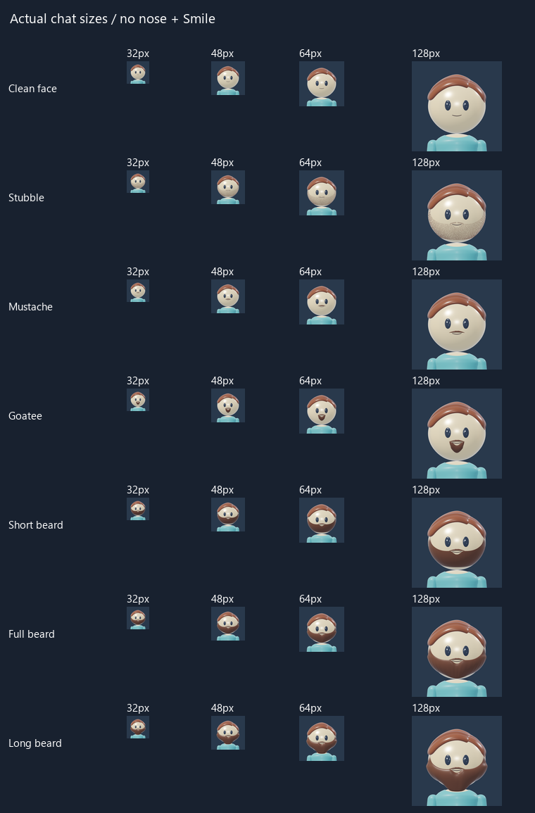

BEARD STUDY · 184
A cleaner beard silhouette
A tapered sideburn transition, a smaller rounded goatee and a more compact long beard. The mouth and optional Rounded nose sit slightly lower; eye placement, head and body are unchanged. Rotate the model or compare the matched before/after views below.
 Blender render · T-shirt / Skirt / Light warm
Blender render · T-shirt / Skirt / Light warmLoad 3D to mix outfits, rotate and zoom. Each build remembers its selections.
Rotate, zoom and compare with one consistent 3D lighting setup. Rotate and zoom to inspect the beard edges, mouth opening and under-chin fit. The head, eyes, scalp hair, body, palette and fixed 3D lighting are retained.
Before and candidate
Revision183 is on the left of each pair;184 is on the right. Matching cameras and lighting; mouth/nose placement is also revised.

Face placement

All grooming choices
Short beard is the recommended starting point. Long beard remains an experimental silhouette.

Sideburn details
Enlarged crops from the same rendered views;183 before,184 candidate from both sides.

Underside checks

No nose or Rounded nose

Skin tones and small portraits


Scope and review
Native sculpted grooming for the cartoon head. The sideburns narrow and become flush with the head. Fine embedded hair texture becomes gradually sparser toward the haircut; no separate floating fade patch. The goatee has a shorter rounded footprint. The long beard has a softened compact tip and a more rounded volume. The rear underside remains clear. These are candidates for review; other clothing and accessory fits remain separate.
Sources: unchanged181 head/body/T-shirt,182 mouth shapes and181 Rounded nose, fitted to the revised184 placement, earlier78/79 grooming as artistic direction only. No main Studio master or profile-byte changes.